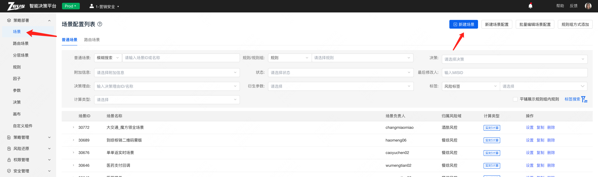
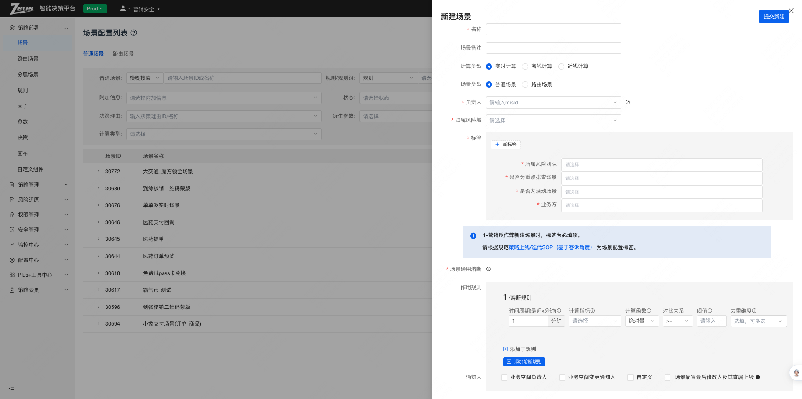
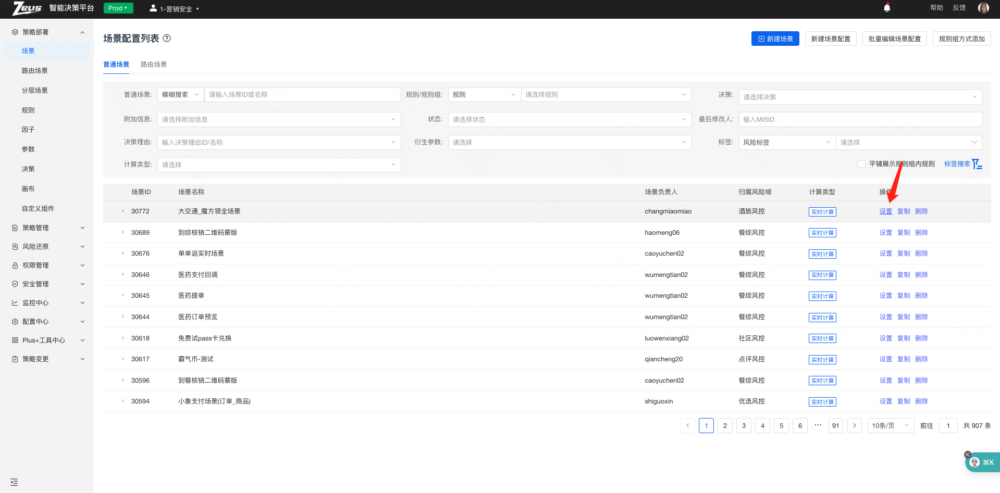
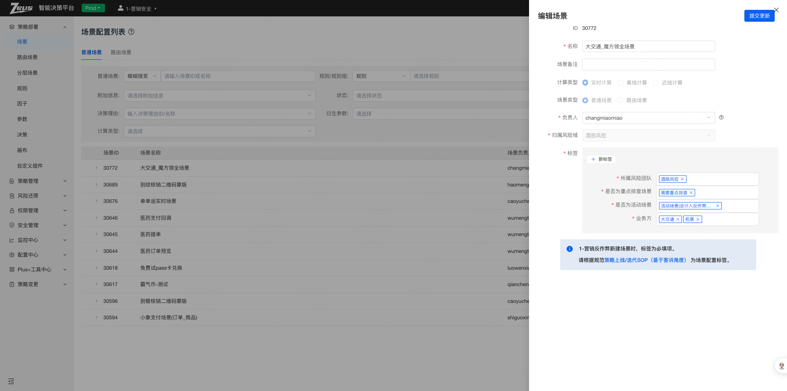

说明：创建/修改场景
一、什么是场景
场景（scene）：场景实质上是一堆规则的集合，关联业务请求与策略，便于专业人员的管理和配置，如反作弊中的促销活动、账户安全中的登录事件；调用决策平台获取决策时，需要指定场景ID，根据场景ID，Zeus才能知道需要运行哪些规则，数据流量按照场景执行；
- 以反作弊为例，一个活动就是一个场景，如团购运营拉新活动是一个场景，它可以包含多个新客满减、立减、1分钱活动，这些活动有其共同特征：都归属于团购、都是新客、都是产品运营部发起；
二、如何新增/修改场景
Step1:入口
策略部署-- > 场景-- > 新建场景

Step2:新增场景
填写场景名称、场景备注，选择计算类型、场景类型、负责人、归属风险域、添加标签，配置场景通用熔断。
【说明】场景命名规范：业务（必须）+活动主名称（表现出类型）+限定后缀（可选），如运营拉新一口价活动（成都，6月）、团购肯德基直减活动（2015年）。
场景类型说明：
- 普通场景：一堆规则的集合，即用来配置规则返回决策的场景，无需按照逻辑进行分流，当前执行完成就完成
- 路由场景：决策流模式，即一堆规则的集合，支持按照逻辑进行分流，满足指定条件可以指定走向在每个节点进行条件设置，实现最终流向；不同于普通场景，路由场景不直接配置或返回决策，而是根据命中规则情况决定接下来要执行哪些普通场景，并执行这些普通场景的规则并返回决策；
负责人/归属风险域：输入misid并选择唯一场景负责人。根据misid平台拉取所属风险域供用户选择
场景通用熔断：为当前场景下所有策略设定兜底熔断阈值

Step3:修改场景
选择需要修改的场景，点击右侧操作列「设置」。可修改名称、场景备注、负责人、标签等信息。计算类型、归属风险域不支持修改。

